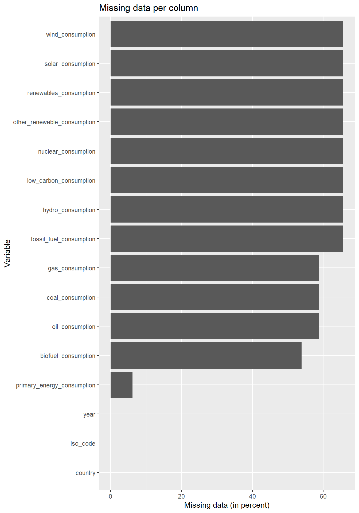

Chapter 5 Results
## [1] "Andorra" "Bolivia (Plurinational State of)"
## [3] "Brunei Darussalam" "Cabo Verde"
## [5] "Congo (Democratic Republic of the)" "Côte d'Ivoire"
## [7] "Eswatini (Kingdom of)" "Hong Kong, China (SAR)"
## [9] "Iran (Islamic Republic of)" "Korea (Democratic People's Rep. of)"
## [11] "Korea (Republic of)" "Lao People's Democratic Republic"
## [13] "Liechtenstein" "Marshall Islands"
## [15] "Micronesia (Federated States of)" "Moldova (Republic of)"
## [17] "Palau" "Palestine, State of"
## [19] "Russian Federation" "San Marino"
## [21] "Syrian Arab Republic" "Tanzania (United Republic of)"
## [23] "Timor-Leste" "Tuvalu"
## [25] "Venezuela (Bolivarian Republic of)" "Viet Nam"Is an energy mix oriented towards renewable sources associated with good human development indicators?


What characterises the countries that have the most renewable energy mix?
On the other hand, how does the production of coal and gas energy leading to more pollution might foster and hinder human development at the same time?